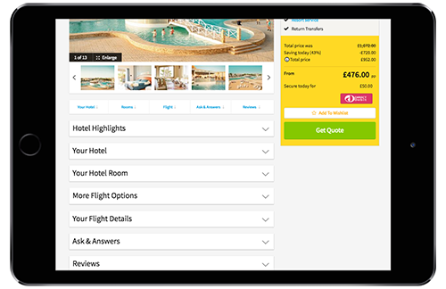

Thomas Cook
The product page on the Thomas Cook website contains a lot of details: in-depth look at all the hotel facilities, what's included in each package, rooms and flights selection, etc. All this information is essential to some of our users at a point in their journey. But they struggle to find what they are looking for, so we decided to re-think the way the content is organised on the page.
As a Senior UX Researcher at Thomas Cook, I conducted:
I started by running some user testing to understand why the call centers were receiving so many queries about the content of the page.
With that in mind, I organised on online card sorting exercise to find out how users naturally grouped the content and how they named the sections. We discovered that some of the section we had thought of as essential (like the one about all the features for children) weren't needed. The card sorting also proved that users chose section names that were more descriptive and short than the current names (for instance "Pool & Beach" for the content about the pool and the nearby beach, and not "Swim & Sun"). I presented these results to the team in charge of the content. There were some surprises, but we still managed to agree on a new way to organise the content.
We needed to validate our proposition before changing thousands of product pages. To do that, I organised 2 tree tests: the first one for the proposed organisation, and the second one for the current organisation. The results helped to validate the changes by showing that with the new tree, users can find the information that was causing problems before, and it takes them less time to get there.
We just finished the tree testing. Once the changes are implemented, all product pages will have: